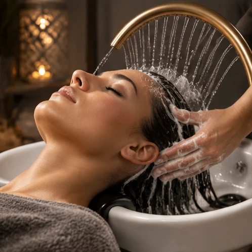
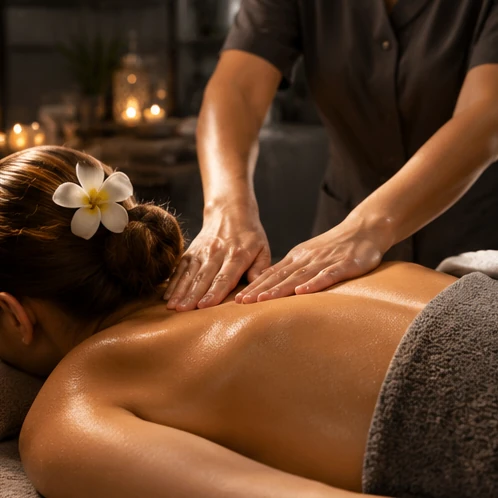
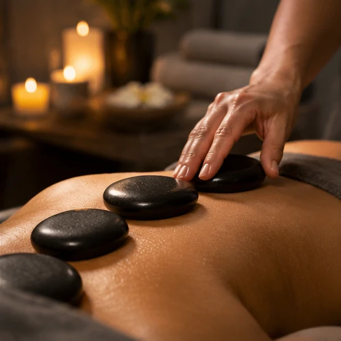
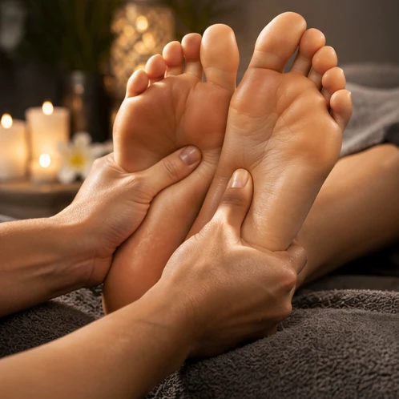
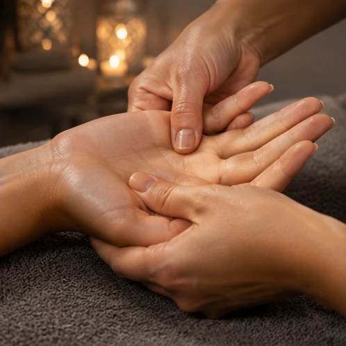

« Un super accueil de la part de pearl. Très douce ainsi qu'à l'écoute. »
Avis Google
Une parenthèse de douceur à Pont-l’Évêque. Découvrez le Head Spa et les massages bien-être du Cocon, pour prendre le temps de ralentir et de vous retrouver.
Chaque soin est une invitation à prendre le temps de vous sentir bien.
Les massages au Cocon s’adressent principalement à une clientèle féminine. Dans le cadre d’une parenthèse bien-être en couple, Pearl accueille également les hommes accompagnés de leur compagne, pour partager ensemble cette expérience de détente.

Une parenthèse de détente, mêlant gestuelle délicate et soin du cuir chevelu.
Découvrir le soin
Des mouvements enveloppants pour une détente tout en douceur.
Découvrir le soin
La douceur des gestes associée à la chaleur des pierres.
Découvrir le soinUn modelage à l’huile, doux et harmonieux.
Découvrir le soin
Un soin de relaxation centré sur les pieds.
Découvrir le soin
Une pause apaisante dédiée aux mains.
Découvrir le soinQuelques retours laissés sur Google et Planity.
« Un super accueil de la part de pearl. Très douce ainsi qu'à l'écoute. »
Avis Google
« Ambiance hyper cocooning, chouchoutée du début à la fin, c’est super agréable. »
Avis Google
« Très agréable et relaxant dans une ambiance très confortable. Pearl est très discrète et à l'écoute de sa cliente. »
Avis Planity
Votre avis compte énormément pour nous.
Un lieu pensé pour vous accueillir avec attention et simplicité. Une ambiance feutrée, des gestes délicats, et ce plaisir de prendre du temps pour soi.
Découvrir le lieuPhotographies du salon Le Cocon.
Une parenthèse de douceur à Pont-l’Évêque. Découvrez le Head Spa et les massages bien-être du Cocon, pour prendre le temps de ralentir et de vous retrouver.
Réserver sur Planity